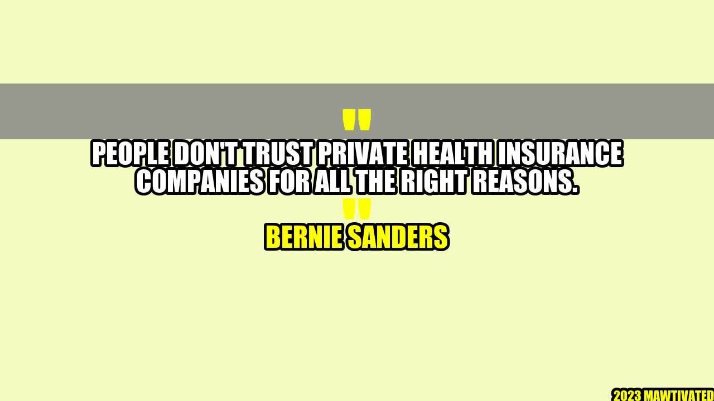

The Struggle with Private Health Insurance Companies

It was a sunny morning when Emma woke up, feeling the pain in her back. She had been experiencing the discomfort for a while, but she ignored it, thinking it would go away. However, the pain became unbearable, and she decided to see a doctor. After being examined by a specialist, she was told she needed a surgery that cost over $20,000.
Emma had private health insurance that she thought would cover her medical expenses. She submitted a claim to her insurance company, but they rejected it, stating that her procedure was not medically necessary. Emma had no other option but to pay for her surgery out of pocket. After that experience, she lost all trust in private health insurance companies.
Why People Don't Trust Private Health Insurance Companies
Emma's story is not unique. Many people feel skeptical about private health insurance companies, and for all the right reasons. These companies have a long history of denying claims, increasing premiums, and making it difficult for people to receive care. Here are some of the reasons why people do not trust private health insurance companies:
High Cost: Health insurance companies charge high premiums, co-payments, and deductibles, making it unaffordable for many people.
Denied Claims: Insurance companies often deny claims, stating that the procedure is not medically necessary or that it is not covered under the policy. This leaves individuals with hefty medical bills.
Limited Options: In some states, there are only a few insurance companies to choose from, limiting the options for consumers. This gives insurance companies monopoly power over the market.
Confusing Policies: Health insurance policies are often written in complicated language, making it difficult for individuals to understand what their policy covers.
Profits Over People: Private health insurance companies are profit-driven, and they prioritize their profits over the health needs of their customers. This has led to many people being denied care or charged exorbitant fees for medical procedures.
Bernie Sanders' Story
Bernie Sanders is an American politician who has been a vocal advocate for universal healthcare. He was a mayor, a representative, and a senator before running for president in 2016 and 2020. Sanders has been advocating for universal healthcare for over 30 years, and he believes that healthcare should be a human right, not a privilege.
Sanders' brother, Larry, died due to complications from a healthcare condition. The lack of access to proper medical care for Larry inspired Sanders to fight for universal healthcare. Sanders' advocacy for healthcare reform has given a voice to millions of people who struggle with access to healthcare.
Examples of Insurance Companies' Unfair Practices
Here are some examples of how insurance companies have acted unfairly towards individuals:
UnitedHealth was accused of overcharging the government for Medicare Advantage, a program designed to help low-income seniors receive healthcare coverage.
Humana was fined for denying coverage to emergency room patients who had been diagnosed with non-life-threatening medical conditions.
Prudential was sued for denying benefits to policyholders who had been diagnosed with severe mental illnesses.
Conclusion
Many people do not trust private health insurance companies, and for all the right reasons. High costs, denied claims, limited options, confusing policies, and profits over people are some of the reasons why people feel skeptical about these companies. Bernie Sanders' story is an inspiring example of how fighting for healthcare reform can give a voice to millions. It is time for us to demand a healthcare system that puts the needs of people first.
Conclusion:
We need a healthcare system that prioritizes people over profits.
We need more transparency in insurance policies, so individuals can know what they are buying.
We need to fight for universal healthcare, so everyone can access the medical care they need.
Practical Tips:
Here are some practical tips for individuals who want to navigate the health insurance system:
Read the fine print of your policy, so you know what is covered and what is not.
Keep a record of all medical bills and claims, so you can dispute any denials.
Compare insurance policies from different companies to find the best deal.
Advocate for healthcare reform in your community and become informed about your rights as a policyholder.
Curated by Team Akash.Mittal.Blog
Share on Twitter Share on LinkedIn